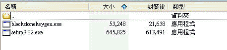
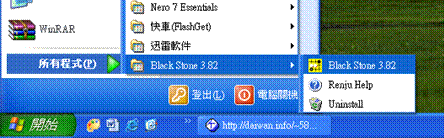
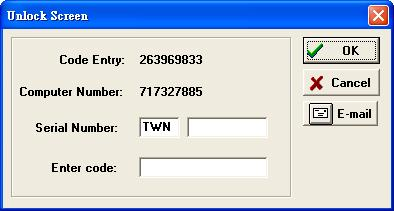
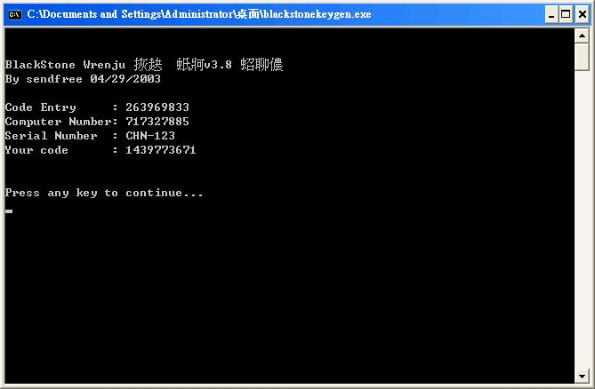
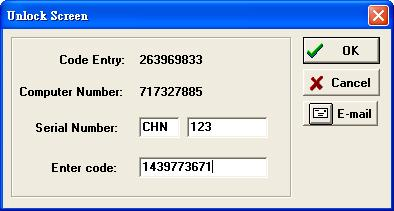
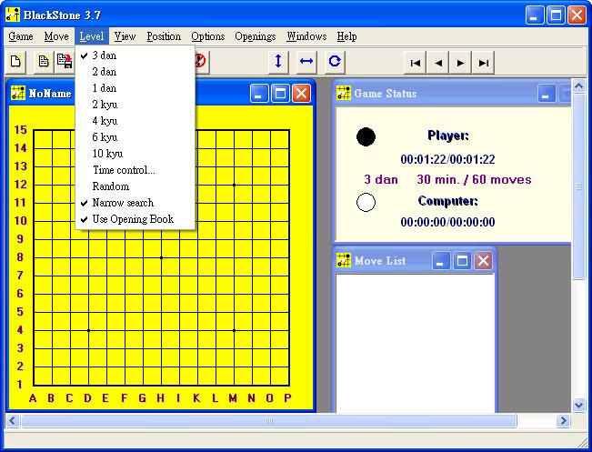
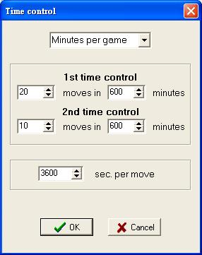
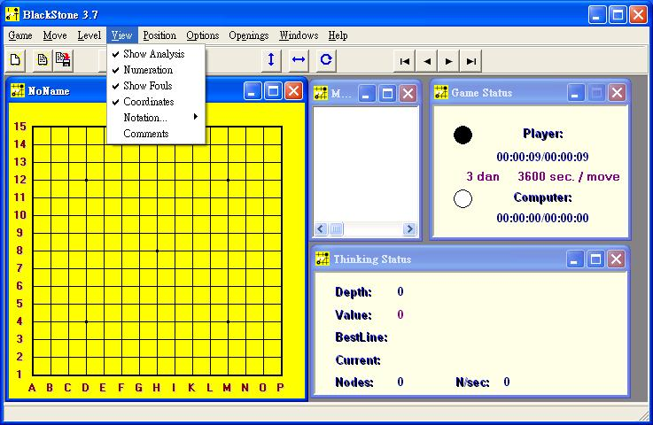
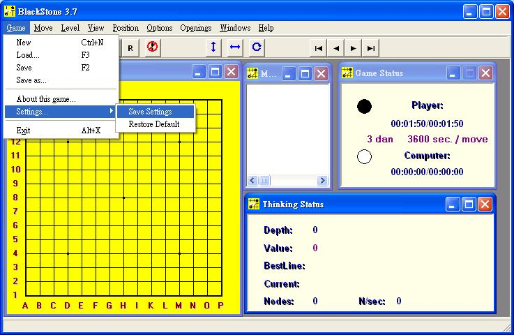
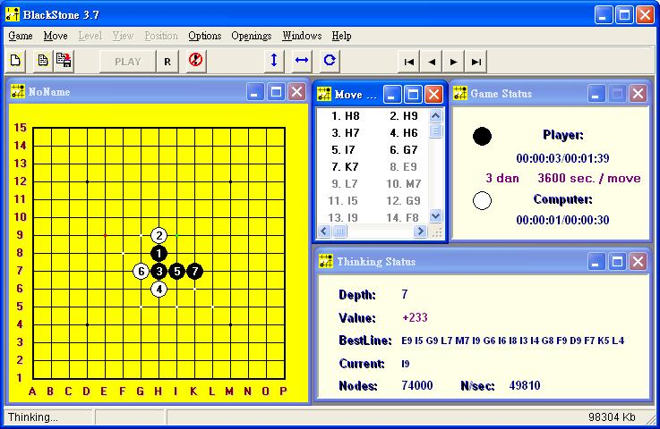

Blackstone 3.82使用說明
下載解壓縮後有兩個檔案 
先安裝setup3.82.exe
裝好後去所有程式找Black Stone 3.82執行，如下

程式會跳出下面畫面

執行另一個程式blackstonekeygen.exe
將Code
Entry及Computer Number照上圖顯示的數字輸入
CHN-之後隨便打一數字，如123

將上面程式的Serial Number及Your code輸入完按ok即可開始使用黑石

雖然左上方是寫3.7，但這是3.82沒錯
以下是站長的設定
先把Level裡3dan及Narrow search打勾

再選擇Time control
把子數設最少20,10時間設成最大600,600,3600，這裡可以設定黑石的思考時間，當然也可以依喜好自由設定

再把View裡的Show Analysis及Show Fouls打勾
最後把右邊三個視窗的大小調整一下

選Game裡Sattings的Save Settings來儲存剛才的設定

使用時，用右鍵下子電腦不會計算，用左鍵下子電腦會開始計算，或者按PLAY也可以叫電腦算
要停止計算則按紅色的禁止符號
計算時，棋盤上會有三種顏色的點，白色是計算過的點，綠色是正在計算的點，紅色是目前所算出的最佳點，通常黑石會算三次，若覺得想太久可以把時間設少一點
右下角的視窗Value的數值若是正的表示黑石認為正在計算的那方有優勢，通常正100多大概就是算出必勝了，反之則必敗（當然有時還是會出錯）
BestLine則表示黑石認為的最佳手順

Move裡的Next Bast蠻好用的，當你覺得黑石下的太弱，可以選這個，可排除剛才的點重算一次
剩下的就留給大家自己去研究了